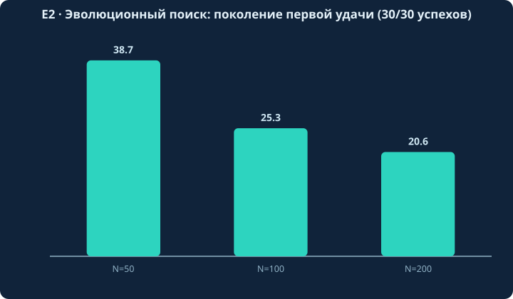
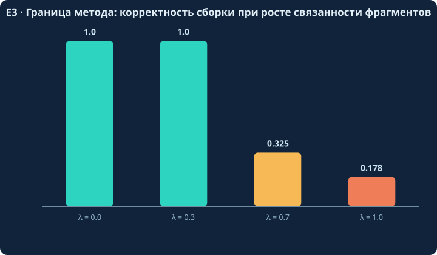
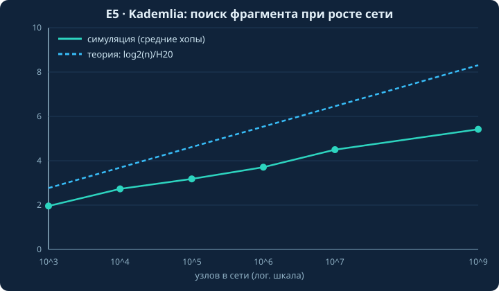
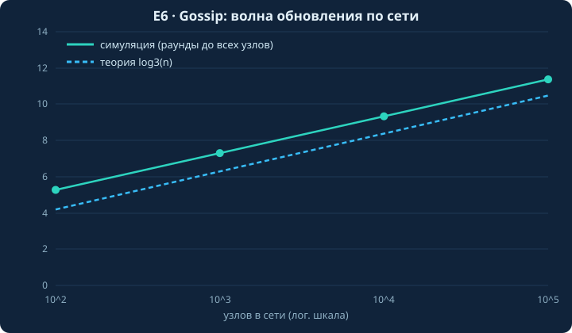
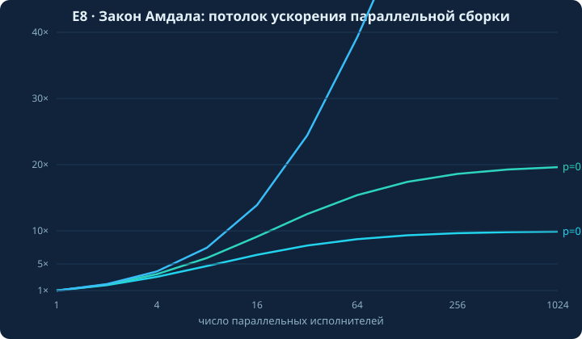
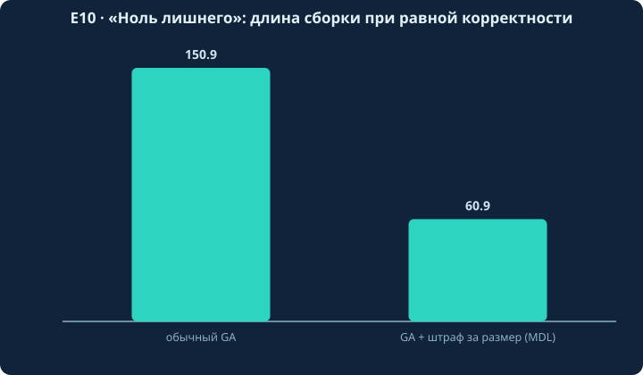

Формальная модель задачи сборки
Определение (пространство фрагментов). ℱ = {g₁, …, gN_F} — конечное множество микро-фрагментов кода. Каждый фрагмент g = (code(g), meta(g)), где code(g) — исполняемый исходный код над алфавитом Σ; meta(g) — интерфейс (сигнатура), пред-/постусловия, хеш, репутация, семантические теги, а также измеренный профиль производительности (бенчмарки по времени, памяти и трафику — часть паспорта фрагмента).
Определение (сборка). Сборка — подмножество S ⊆ ℱ вместе с операцией композиции ∘, склеивающей фрагменты в программу p ∈ 𝒫.
Постановка задачи. Дано задание T со спецификацией Spec(T). Требуется найти:
где Err — несоответствие спецификации (проваленные тесты), cost — полный ресурсный след программы: размер, время выполнения, память, сетевой трафик, энергия (реализация принципов «ноль лишнего» и ресурсной ответственности), incomp — конфликты интерфейсов; α ≫ β, γ по умолчанию. Ограничения: типизируемость сборки, попарная совместимость интерфейсов, бюджет cost(p) ≤ B. Наличие cost в целевой функции означает, что эволюционный отбор отсекает расточительные комбинации автоматически: оптимизация встроена в механизм отбора, а не является отдельным этапом «когда прижмёт».
Замечание о сложности. Пространство поиска — 2N_F подмножеств. При N_F ~ 10⁶ точное решение перебором невозможно.
Комбинаторная оценка (E1)
Число сочетаний C(N_F, k) растёт взрывным образом:
| N_F \ k | 10 | 20 |
|---|---|---|
| 10⁴ | 1033.4 | 1061.6 |
| 10⁶ | 1053.4 | 10101.6 |
При N_F = 10⁶, k = 20 получаем ≈10¹⁰¹ комбинаций — больше числа атомов во Вселенной (~10⁸⁰). Полный перебор невозможен. Контроль точными значениями: C(100,3) = 161 700; C(1000,10) = 2,63·10²³.
Эволюционный движок
Теоретические якоря
- Схема-теорема Холланда [доказано]. Короткие низкопорядковые схемы с фитнесом выше среднего нарастают в числе экспоненциально: E[m(H,t+1)] ≥ m(H,t)·(f̂(H,t)/f̄(t))·[1 − p_c·d(H)/(L−1) − o(H)·p_m]. Оговорка: неравенство об ожидании, не уравнение динамики.
- Уравнение Прайса [доказано]. w̄·Δz̄ = Cov(wᵢ, zᵢ) + E(wᵢ·Δzᵢ) — фундаментальное разложение эволюционной динамики.
- Building Block Hypothesis [гипотеза] (Goldberg, 1989). Рабочее предположение о низкой эпистазии между хорошо изолированными фрагментами; известны контрпримеры (обманные функции).
- Sizing по Goldberg–Deb–Clark [доказано в принятой модели шума]. N_s = 2cκσ²_M/d², где c — квадрат одностороннего нормального отклонения: при допустимой ошибке решения α = 0,05 имеем z = 1,645, c = z² ≈ 2,71. Эмпирический порог успешности N* = 50–100 против теоретической оценки 173 (при σ_M/d = 4): теория даёт запас, эмпирика скромнее — расхождение объяснимо элитизмом по истинному fitness.
Численные результаты (seed = 42, воспроизводимы)
E2 — сходимость GA (L=20, M=10): успех 30/30 при N ∈ {50, 100, 200}; первое попадание оптимума в поколении 38,7 / 25,3 / 20,6 (mean). Бюджет ≈ N·G = 2·10⁴ оценок против 10¹⁰¹ перебора — GA просматривает долю ≈10⁻⁹⁷ пространства и работает не за счёт перебора.

E3 — эпистазия: при доле парных взаимодействий λ ≤ 0,3 корректность 1,0; при λ = 0,7 падает до 0,325 (0/30 до оптимума). Обосновывает требование «чистых интерфейсов» между фрагментами.

E4 — sizing vs эмпирика: при σ_M/d = 4 теоретический GDC N_s = 173 (κ=2, c=z²≈2,71), эмпирический порог N* = 50–100; теория консервативна в 1,7–3,5 раза (элитизм по истинному fitness).
Рой микросетей: ансамблевые границы
Bias–variance декомпозиция [Geman et al., 1992]: E[(y−f̂(x))²] = Bias² + Var + σ². Для ансамбля из M моделей с попарной корреляцией ошибок ρ: Var → ρσ² при M→∞ — ключевую роль играет разнообразие экспертов (низкая ρ). Специализация через sparse MoE [Shazeer et al., 2017, arXiv:1701.06538] — «разреженная смесь экспертов».
Граница [правдоподобно]: теоремы универсального превосходства роя нет (NFL); выигрыш достигается по латентности, отказоустойчивости и transfer-efficiency; сравнение «рой vs одна большая модель» — эмпирический вопрос.
Синтез по спецификации: CEGIS
Каркас SyGuS [Alur et al., 2013]: найти f ∈ ℋ такое, что ∃f ∀x ∈ 𝒟: φ(x, f(x)). Цикл «синтезатор–верификатор»: soundness доказана; завершаемость при конечной грамматике доказана; полнота в общем случае недостижима.
E9 (toy): max(x,y) синтезирован как ite((x<y), y, x) за 1 итерацию CEGIS (820 кандидатов, 0,05 с); пост-верификация на сетке 1600 точек — 0 расхождений. Граница выразимости: без оператора сравнения задача невыразима в грамматике {+, *, ite} — честная граница метода.
P2P-слой: доказанные оценки
- Kademlia [доказано], O(log n). E5 (n=10⁹, k=20, 1000 lookup): среднее 5,42 ± 0,83 хопов, максимум 8 (верхняя граница ceil log₂ n = 30).
- Gossip push-pull [доказано], O(log n) [Karp et al., FOCS 2000]. E6: n=10⁵ → 11,37 ± 0,48 раундов при log₃ n = 10,48 (ratio 1,08 и убывает с ростом n).
- CRDT [доказано] [Shapiro et al., 2011]. Join-полурешётка = коммутативный идемпотентный моноид → eventual consistency. E7: 10 000/10 000 проверок коммутативности/ассоциативности/идемпотентности для GCounter, GSet, ORSet; 1000/1000 сценариев сходимости реплик.
- Амдал [доказано]. E8: p=0,99 → S(1024)=91,2, предел 100; последовательная часть (координация, верификация) задаёт потолок ускорения распределённой сборки.



Доверие без блокчейна
| Механизм | Гарантия | Статус | Источник |
|---|---|---|---|
| PBFT | n ≥ 3f+1 (византийские отказы) | Доказано | Castro & Liskov, 1999/2002 |
| Raft | n ≥ 2f+1 (crash-only) | Доказано | Ongaro & Ousterhout, 2014 |
| Hashgraph aBFT | n ≥ 3f+1, асинхронный BFT | Свойство протокола | Baird, 2016 |
| Sybil-защита | Без внешней идентификации невозможна | Доказано (нижняя граница) | Douceur, 2002 |
| Репутация | Исполняемые тесты + resource testing | Инженерная практика | Mohaisen & Kim, 2013 |
«Ноль лишнего»: MDL и колмогоровская сложность
MDL-принцип [Rissanen, 1978; Grünwald, 2007]: L(D) = min_H [L(H) + L(D|H)] — формализация бритвы Оккама. Колмогоровская сложность K(x) невычислима; любая практическая минимизация — аппроксимация.
E10 (a): дублирующиеся мёртвые фрагменты почти не влияют на zlib-размер (159 → 265 при k: 0 → 200); уникальные мёртвые растут и raw-, и zlib-метрику. (b): GA с MDL-штрафом сокращает длину сборки в 2,5× (150,9 → 60,9) при сохранении корректности 1,0. (c): корреляция Пирсона zlib-длины с корректностью ≈ −0,04 — сжатие ловит структуру содержимого, а не «нужность»; граница MDL-эвристики зафиксирована.

Честные пределы
| Барьер | Результат | Статус | Следствие для концепта |
|---|---|---|---|
| K невычислима | Kolmogorov; Li & Vitányi, 2008 | Невозможно | «Ноль лишнего» — эвристика (MDL), не математический оптимум |
| No Free Lunch | Wolpert & Macready, 1997 | Невозможно | Нет идеального сборщика для всех задач; сила — на классе задач со структурой |
| Закон Амдала | Amdahl, 1967 | Доказано | Параллелизм ограничен последовательной долей координации |
| Остановка / Райс | Turing, 1936; Rice, 1953 | Невозможно | Абсолютная безошибочность недостижима; достижимы тесты на конечных наборах и верификация ограниченных свойств |
Дополнительные оговорки: схема-теорема ≠ гарантия сходимости GA; hashgraph aBFT — свойство протокола при его допущениях; Tangle — вероятностный консенсус; квантовые перспективы концепта — вне текущей математической базы и обозначены как направление.
Верифицируемость
Все 10 серий экспериментов исполнены на Python + numpy с фиксированным начальным состоянием генератора случайных чисел; исходные коды всех экспериментов открыты — в каталоге research/experiments/ этого репозитория, полный отчёт — в research/report.md. Каждый запуск воспроизводим: любой желающий может повторить вычисления и получить те же числа. Полный список источников — 47 позиций с указанием авторов, года и ссылки на первоисточник — приведён в научной публикации концепции; ниже воспроизведена его внешняя часть (позиции 1–40; позиции 41–47 — рабочие материалы концепции, они фиксируются в самой публикации).
- Holland J.H., 1975. Adaptation in Natural and Artificial Systems. Univ. of Michigan Press. en.wikipedia.org/wiki/Holland%27s_schema_theorem
- Goldberg D.E., 1989. Genetic Algorithms in Search, Optimization and Machine Learning. Addison-Wesley. (BBH)
- Goldberg D.E., Deb K., Clark J.H., 1992. Genetic Algorithms, Noise, and the Sizing of Populations. Complex Systems 6:333–362. content.wolfram.com/sites/13/2018/02/06-4-3.pdf ; egr.msu.edu/~kdeb/papers/k99003.pdf (формула (14))
- Price G.R., 1970. Selection and covariance. Nature 227:520–521. en.wikipedia.org/wiki/Price_equation ; pmc.ncbi.nlm.nih.gov/articles/PMC3354028
- White D.R., 2018. An overview of schema theory. GJM. gradmath.org/…/White-GJM-2018.pdf
- Langdon W.B., 1998. Genetic Programming and Data Structures. Springer.
- Eiben A.E., Smith J.E., 2003/2015. Introduction to Evolutionary Computing. Springer.
- Wolpert D.H., Macready W.G., 1997. No Free Lunch Theorems for Optimization. IEEE TEC 1(1):67–82. en.wikipedia.org/wiki/No_free_lunch_theorem ; no-free-lunch.org ; ieeexplore.ieee.org/document/585893
- Amdahl G., 1967. Validity of the Single Processor Approach… AFIPS. geeksforgeeks.org/…/amdahls-law-and-its-proof ; web.engr.oregonstate.edu/…/speedups.and.amdahls.law.1pp.pdf
- Gustafson J., 1988. Reevaluating Amdahl's Law. CACM.
- Turing A., 1936. On Computable Numbers… Proc. LMS. en.wikipedia.org/wiki/Halting_problem ; tonia.ai/undecidability.html
- Rice H.G., 1953. Classes of Recursively Enumerable Sets… Trans. AMS. en.wikipedia.org/wiki/Halting_problem ; tonia.ai/undecidability.html
- arXiv:2604.16477 (2026). A Constructive Proof of Rice's Theorem… arxiv.org/html/2604.16477v1
- Alur R. et al., 2013. Syntax-Guided Synthesis (SyGuS). FMCAD. semanticscholar.org/paper/Syntax-guided-synthesis-Alur-Bod%C3%ADk
- Solar-Lezama A., 2013. Program Sketching. STTT 15(5-6):475–495. homepages.dcc.ufmg.br/…/cegist-journal.pdf ; cs.ox.ac.uk/…/bcADKKP18.pdf
- CEGIS-материалы: pages.cs.wisc.edu/…/assignment_cegis.html ; remy.wang/blog/cegis.html ; emergentmind.com/topics/counterexample-guided-inductive-synthesis-cegis
- Maymounkov P., Mazières D., 2002. Kademlia: A Peer-to-peer Information System Based on the XOR Metric. IPTPS. ic.unicamp.br/…/Kademlia-XOR-Metric-.pdf ; en.wikipedia.org/wiki/Kademlia
- Karp R. et al., 2000. Randomized Rumor Spreading. FOCS 2000. csun.edu/…/randomized.pdf
- Haeupler B., 2015. Simple, Fast and Deterministic Gossip… JACM/ACM. disco.ethz.ch/…/1.pdf
- Cohen B., 2003. Incentives Build Robustness in BitTorrent. IPTPS. cs.princeton.edu/…/BitTorrent03.pdf
- Legout A. et al., 2006. Rarest First and Choke Algorithms Are Enough. ACM SIGCOMM. eurecom.fr/en/publication/1932
- Shapiro M. et al., 2011. A Comprehensive Study of Convergent and Commutative Replicated Data Types. INRIA RR-7506 / SSS 2011. dsf.berkeley.edu/cs286/papers/crdt-tr2011.pdf ; asc.di.fct.unl.pt/~nmp/pubs/sss-2011.pdf ; crdt.tech
- Castro M., Liskov B., 1999/2002. Practical Byzantine Fault Tolerance. OSDI'99 / ACM TOCS. users.cs.utah.edu/…/pbft.pdf
- Ongaro D., Ousterhout J., 2014. In Search of an Understandable Consensus Algorithm (Raft). USENIX ATC. raft.github.io/raft.pdf
- Baird L., 2016. The Swirlds Hashgraph Consensus Algorithm. en.wikipedia.org/wiki/Hedera_(distributed_ledger) ; docs.hedera.com/learn/core-concepts/hashgraph
- Popov S., 2017/2022. The Tangle. IOTA whitepaper. arxiv.org/pdf/2209.04959 ; pmc.ncbi.nlm.nih.gov/articles/PMC12157984
- Douceur J., 2002. The Sybil Attack. IPTPS. microsoft.com/…/the-sybil-attack (исправлено R3)
- Mohaisen A., Kim J., 2013. The Sybil Attacks and Defenses: A Survey. verisign.com/assets/labs/scr13.pdf
- Hoffman K. et al., 2009. A Survey of Attack and Defense Techniques for Reputation Systems. cnitarot.github.io/papers/p2p-reputation-survey.pdf
- Geman S. et al., 1992. Neural Networks and the Bias/Variance Dilemma. Neural Computation 4(1):1–58. doursat.free.fr/…/Geman_Bienenstock_Doursat_1992_bv_NeurComp.pdf
- Dietterich T., 2000. Ensemble Methods in Machine Learning. MCS. (цитируется в arxiv.org/pdf/2301.03962)
- Ueda N., Nakano R., 1996. Generalization Error of Ensemble Estimators. (обсуждается в arxiv.org/pdf/2301.03962)
- Domingos P., 2000. A Unified Bias-Variance Decomposition. ICML. homes.cs.washington.edu/~pedrod/bvd.pdf
- Jacobs R. et al., 1991. Adaptive Mixtures of Local Experts. Neural Computation 3(1):79–87.
- Shazeer N. et al., 2017. Outrageously Large Neural Networks: The Sparsely-Gated Mixture-of-Experts Layer. arXiv:1701.06538.
- Rissanen J., 1978. Modeling by Shortest Data Description. Automatica 14:465–471. modelselection.org/mdl
- Kolmogorov A.N., 1963/1968. On Tables of Random Numbers / Three Approaches… (см. Li & Vitányi)
- Li M., Vitányi P., 2008. An Introduction to Kolmogorov Complexity and Its Applications. 3rd ed., Springer. (исправлено R3: правильное авторство)
- Grünwald P., 2007. The Minimum Description Length Principle. MIT Press. homepages.cwi.nl/~pdg/ftp/mdlintro.pdf
- Statistics How To. Kolmogorov Complexity & Minimum Description Length. statisticshowto.com/minimum-description-length-kolmogorov-complexity